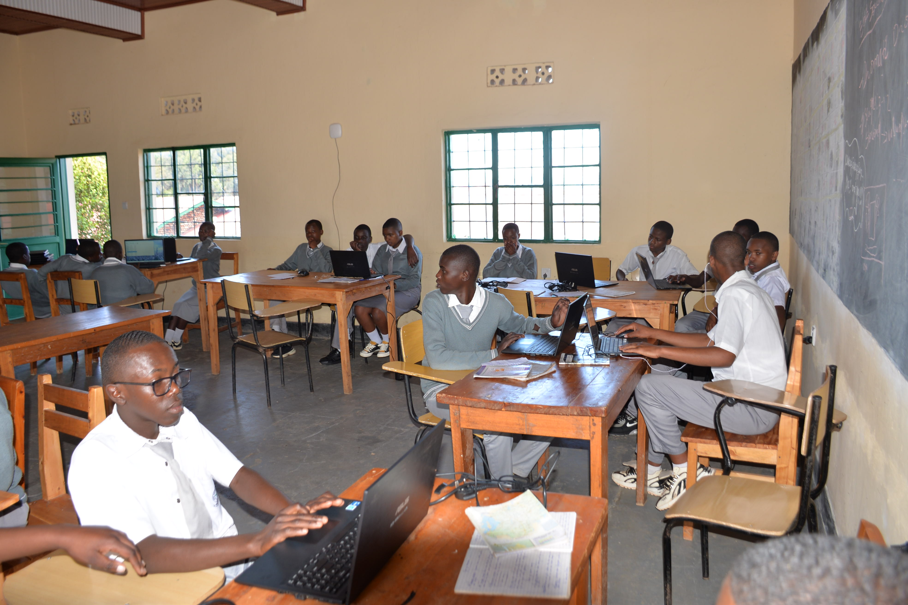
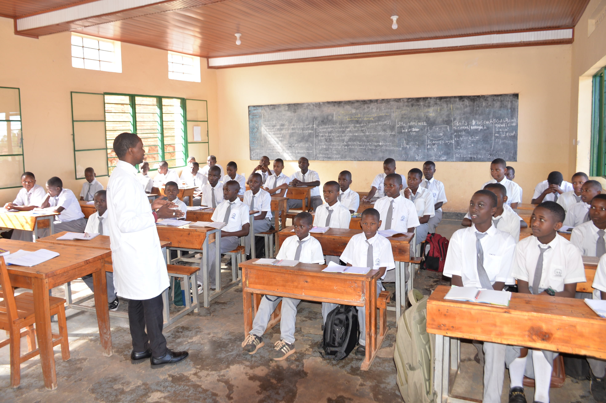
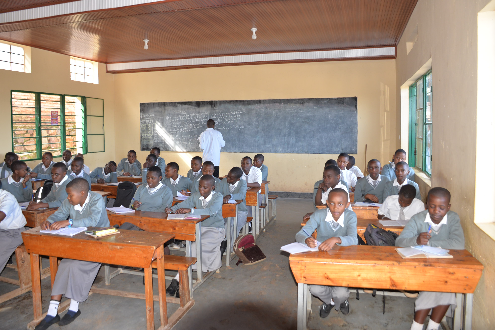

Software development students are logical thinkers
Software development students are logical thinkers 
Multimedia students are creative learners


Senior One to Senior Three students are equipped with modern knowledge and practical skills in technology, multimedia, and digital communication. They learn in a creative and professional environment that encourages teamwork, innovation, and problem-solving. Through hands-on activities, students gain experience using computers , cameras, and modern studio equipment. The program helps learners build confidence, discipline, and technical abilities needed in the digital world. By combining education with real practice, students are prepared for future studies and career opportunities in technology and media fields.